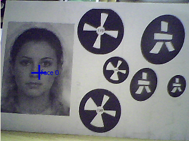

ALFaceDetection¶
NAOqi People Perception - Overview | API | Tutorials
What it does¶
ALFaceDetection is a vision module in which the robot tries to detect, and optionally recognize, faces in front of him.
How it works¶
ALFaceDetection is based on a face detection/recognition solution provided by OMRON.
Face detection¶
Face detection detects faces and provides their position, as well as a list of angular coordinates for important faces features (eyes, nose, mouth).
Recognition¶
To make the robot not only detect but also recognize people, a learning stage is necessary. For further details, see: Learning stage for recognition.
Recognition feature returns for every image the names of people that are recognized.
Threshold¶
Each name is associated to a matching score between 0 and 1. A higher score means a higher certainty. Only results with a score above a given threshold are considered, which means that it is possible to configure ALFaceDetection to be more or less strict. A low threshold value means that the module often returns results but they can be wrong. A higher value means that only matches with a high certainty are considered, reducing the risk of errors, but it might be harder to get any result at all.
Temporal filter¶
In addition, there is temporal filter output to easily build higher level features using recognition. Indeed we don’t want the robot to say “Hello Michel” several times per second, so someone’s name is only be output the first time he is recognized and is placed in a short term memory. This memory is kept as long as some faces is not only recognized but detected by the robot. As soon as there are more than 4 seconds without detecting any face, the short term memory is cleared and Michel name will be output again if the robot encounters him. This is that output that is used in the Choregraphe Face Reco box.
FaceDetected Event¶
Once ALFaceDetection is started, the event FaceDetected()
returns a value organized as follows:
FaceDetected =
[
TimeStamp,
[ FaceInfo[N], Time_Filtered_Reco_Info ],
CameraPose_InTorsoFrame,
CameraPose_InRobotFrame,
Camera_Id
]
TimeStamp: this field is the time stamp of the image that was used to perform the detection.
TimeStamp =
[
TimeStamp_Seconds,
Timestamp_Microseconds
]
FaceInfo: for each detected face, we have one FaceInfo field.
FaceInfo =
[
ShapeInfo,
ExtraInfo[N]
]
ShapeInfo: shape information about a face.
ShapeInfo =
[
0,
alpha,
beta,
sizeX,
sizeY
]
- alpha and beta represent the face’s location in terms of camera angles
- sizeX and sizeY are the face’s size in camera angle
ExtraInfo: shape information about a face.
ExtraInfo =
[
faceID,
scoreReco,
faceLabel,
leftEyePoints,
rightEyePoints,
unused, # for backward-compatibility issues
unused,
nosePoints,
mouthPoints
]
- faceID represents the ID number for the face
- scoreReco is the score returned by the recognition process (the higher, the better)
- faceLabel is the name of the recognized face if the face has been recognized
- leftEyePoints and rightEyePoints provide interesting points positions for the eyes (given in camera angles)
EyePoints =
[
eyeCenter_x,
eyeCenter_y,
noseSideLimit_x,
noseSideLimit_y,
earSideLimit_x,
earSideLimit_y,
always_zero, # for backward-compatibility issues
always_zero,
always_zero,
always_zero,
always_zero,
always_zero,
always_zero,
always_zero
]
- nosePoints provides interesting points positions for the nose (given in camera angles)
NosePoints =
[
bottomCenterLimit_x,
bottomCenterLimit_y,
bottomLeftLimit_x,
bottomLeftLimit_y,
bottomRightLimit_x,
bottomRightLimit_y
]
- mouthPoints provides interesting points positions for the mouth (given in camera angles)
MouthPoints =
[
leftLimit_x,
leftLimit_y,
rightLimit_x,
rightLimit_y,
topLimit_x,
topLimit_y,
always_zero,
always_zero,
always_zero,
always_zero,
always_zero,
always_zero,
always_zero,
always_zero,
always_zero,
always_zero
]
Time_Filtered_Reco_Info can be equal to:
- [] if there is nothing new
- [ 2, [ faceLabel ] ] if there is one face recognized
- [ 3, [ faceLabel0, ..., faceLabelP ] ] if there are several recognized faces
- [ 4 ] if a face has been detected for more than 8 seconds without being recognized. Getting this result is a suggestion to learn this face if desired, but keep in mind that recognition only works for faces looking towards the robot.
CameraPose_InTorsoFrame: describes the Position6D of the camera at the time the image was taken, in FRAME_TORSO.
CameraPose_InRobotFrame: describes the Position6D of the camera at the time the image was taken, in FRAME_ROBOT.
Camera_Id: gives the Id of the camera used for the detection (0 for the top camera, 1 for the bottom camera).
Performances and Limitations¶
Detection¶
Performances
- Face width: minimum 20 pixels in the image. For an adult, this corresponds to around 2 meters in a QVGA image and 4 meters in VGA.
- Tilt/Pan: maximum +/- 15 deg (0 deg corresponding to a face facing the camera)
- Rotation in image plane: maximum +/- 45 deg
Limitations
- Lighting: the face detection has been tested under office lightning conditions - i.e., under 100 to 500 lux. If you feel that the detection is not running well, try to activate the camera auto gain - via the Monitor interface - or try to manually adjust the camera contrast.
Recognition¶
Performances
- Face width: minimum 20 pixels in the image. However, a minimum size of 40 pixels is recommended for better learning and recognition results.
When learning someones face, the subject is supposed to face the camera and to keep a neutral face because a neutral face is between sadness and happiness. Otherwise, it would be harder to recognize someone sad if he was smiling during the learning process.
Sometimes, depending on a change of location or haircut, a known face can be difficult to recognize. To improve the robustness, a reinforcement process as been added. If someone is not recognized, or mistaken for someone else, just learn him again. This learning will be added to that person’s database. After some days, you should get more reliable recognitions.
Limitations
Recognition is less robust than detection regarding pan, tilt, rotation and maximal distance. Reason is that the recognition algorithm doesn’t have a 3D representation of the person to recognize and uses some info like distances between keypoints for the recognition. If we turn the head, these distances ratios are modified.
Learning¶
Performances
The learning stage takes five consecutive images and tries to learn a user’s face from each of these images.
Limitations
The learning stage only considers the biggest face found in the field of view.
Getting Started¶
Detection¶
To get a feel of what the ALFaceDetection can do, you can use Monitor and launch the vision plugin. Activate the face detection checkbox and start the camera acquisition. Then, if you present your face to the camera - or show a picture with a face on it - Monitor should report the detected faces with blue crosses.
Another way to use face detection is to launch the Choregraphe Face Tracker box. The robot will try to keep a detected face in the middle of its field of view.
Learning stage for recognition¶
Learning stage can be done via the learnFace bound method of the API or through user friendly interface of Choregraphe Learn Face box.
- Once you have clicked on the box and entered the name of the person, this person has 5 seconds to place its face in front of the robot.
- Then the learning process is launched during which the eyes of the robot get blue.
- His eyes turn green in less than a second if the face is seen by the robot in correct conditions (e.g. no partial shadow on the face, no backlight, person is not too far).
- If the eyes are still blue after some seconds, the person should move in order to change the learning conditions.
Note
The algorithm requires better conditions for the learning stage than the ones needed for detection.
Note
You can launch the Face Tracker box in parallel with the learning stage so the face to learn is always in the middle of the robot’s field of view.